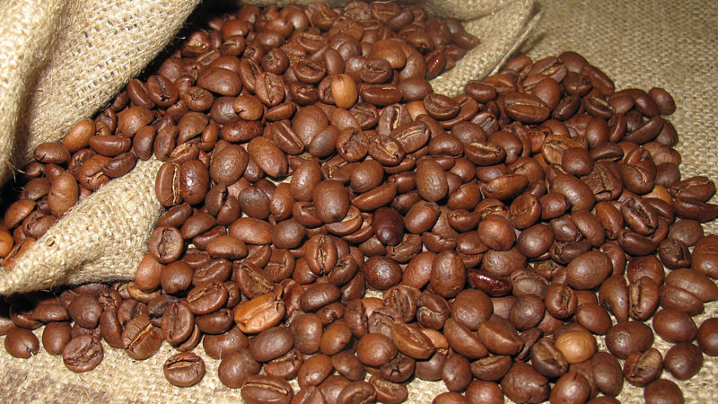

Sejarah
Sejarah kopi mulai dicatat sejak abad ke-9. Awal mulanya kopi hanya ada di Ethiopia, di mana biji-bijian asli ditanam oleh orang Ethiopia dataran tinggi. Akan tetapi, ketika bangsa Arab mulai memperluas perdagangannya, biji kopi pun meluas sampai ke Afrika Utara dan biji kopi yang di sana ditanam secara massal. Dari Afrika Utara itulah biji kopi mulai meluas ke Asia hingga pasaran Eropa, dan ketenarannya sebagai minuman mulai menyebar.Tanaman kopi dibawa masuk ke Indonesia pada masa kolonial Belanda, yang berhasil membuat Indonesia menjadi salah satu negara penghasil kopi utama di dunia hingga kini. Namun, akibat arus globalisasi dan kapitalisme Belanda yang diterima Indonesia, budaya kopi Indonesia hanya menjadi bagian dari keseharian dan tidak banyak diapresiasi masyarakat lokal. Salah satu temuan penting adalah budaya kopi yang ada di Indonesia mendapatkan banyak pengaruh dari Eropa (Italia), Cina, Melayu, dan budaya lokal (seperti Jawa, Sumatra, dll); baik dalam hal pengolahan maupun dalam penyajian.
Istilah Kopi
William H. Ukers dalam buku yang ditulisnya mengatakan bahwa kata “kopi” masuk dalam bahasa-bahasa Eropa pada tahun 1600-an. Dalam buku “All About Coffee” (1922) tersebut dikatakan kata “kopi” atau “coffee” diambil dari bahasa Arab “qahwa” yang diserap ke bahasa Turki “kahveh”.Dalam bahasa Arab, kata “qahwa” bukan berarti tanaman kopi, namun justru merujuk pada nama minuman. Dapat dikatakan “qahwa” merupakan sebutan untuk minuman yang dibuat dari biji dan diseduh denga air panas.Sedangan kata “kopi” yang kita kenal saat ini untuk menyebut minuman dari biji kopi merupakan serapan kata dari bahasa Belanda “koffie”. Teori ini dirasa akurat sebab pemerintahan Belanda membuka perkebunan kopi pertama di Indoneia. Namun tidak menutup kemungkinan juga diserap langsung dari bahasa Arab dan Turki karena Indonesia telah memiliki hubungan dengan mereka sebelum bangsa Eropa datang.
Jenis Biji Kopi
Ada 25 jenis kopi yang buahnya paling komersil, namun hanya ada 4 jenis kopi yang paling terkenal di dunia bisnis biji kopi. Keempat jenis kopi tersebut adalah kopi arabika, kopi robusta, kopi liberika, dan kopi ekselsa
Kopi Arabika

Kopi arabika awalnya berasal dari negara Brazil. Kopi arabika merupakan jenis kopi pertama yang ditemukan dan dibudidayakan oleh manusia hingga sekarang.Kopi arabika saat ini telah menguasai sebagian besar pasar kopi dunia dan harganya jauh lebih tinggi daripada jenis kopi lainnya. Di Indonesia sendiri kita dapat menemukan jenis kopi arabika ini dari mulai Aceh sampai di Papua.
Kopi Robusta

Kopi robusta awalnya ditemukan di negara Kongo. Jenis kopi ini dapat tumbuh baik di ketinggian 400-700 m dpl (diatas permukaan laut) dengan suhu 21-24 derajat celcius. Jenis kopi robusta lebih tahan terhadap serangan penyakit karat daun. Umumnya, jenis kopi ini memerlukan waktu 10-11 bulan untuk proses pembuahan dari bunga hingga menjadi buah.Kelemahan dari kopi berjenis robusta ini adalah rasanya yang kurang mantap dan cenderung lebih pahit dibandingkan dengan arabika. Harganya pun jauh lebih murah dibandingkan dengan kopi berjenis arabika, sehingga di Indonesia kopi berjenis ini dikenal juga dengan “kopi murah”.
Kopi Liberika
Kopi liberika berasal dari Liberia, Afrika barat. Kopi liberika dapat tumbuh sekitar 9 meter dari tanah. Jenis kopi ini memiliki ukuran daun, bunga, cabang, buah, dan pohon yang lebih besar dibandingkan dengan jenis arabika dan robusta. Kopi liberika agak rentan terhadap penyakit HV Hemileia vastratix atau penyakit karat daun.Memiliki kualitas buah yang relatif rendah, namun kopi berjenis liberika mampu berbuah sepanjang tahun dan dapat tumbuh dengan baik di dataran rendah. Kopi liberika yang pernah didatangkan ke Indonesia yaitu yang bervarietas Ardoniana dan Durvei.
Kopi Ekselsa
Kopi ekselsa berasal dari Afrika barat, pertama kali jenis kopi ini ditemukan di dekat Danau Chad. Kopi jenis Ekselsa ini sangat cocok dibudidayakan di daerah dataran rendah yang basah. Kopi jenis ini sangat mudah dalam hal pembudidayaannya, karena kopi berjenis ekselsa tidak rentan diserang penyakit. Kopi ini juga dapat ditanam di areal lahan gambut.Di Indonesia, kopi berjenis ekselsa mudah ditemui di kabupaten Tanjung Jabung Barat Provinsi Jambi, karena topografi lahan di daerah sana sangat mendukung untuk ditanami kopi berjenis ekselsa ini. Memang harga dan kualitasnya masih jauh dibawah jenis kopi arabika dan robusta tetapi karena tanaman kopi berjenis ini tidak mudah diserang penyakit, sehingga banyak juga petani kopi yang membudidayakan kopi berjenis ekselsa ini.
Perkembangan Kopi

Dahulu, ngopi sering dikatakan sebagai kegiatan orang tua. Namun, saat ini dengan adanya perkembangan zaman, istilah ngopi menjadi hal yang banyak dilakukan oleh berbagai kalangan mulai dari remaja hingga dewasa. Tak heran jika banyak bermunculan bisnis coffee shop kekinian belakangan ini. Hal tersebut menjadi peluang besar bagi orang yang membuka usaha. Selain itu, dari sisi petani pun banyak yang disejahterakan mengingat kualitas dan reputasi biji kopi Indonesia yang selalu menempati posisi teratas di dunia.Kopi sering dijadikan minuman wajib dikonsumsi setiap hari bagi sebagian orang, hal itu karena kopi diyakini dapat menjadi penambah energi saat memulai hari. Bahkan, kini kopi menjadi teman setia saat nongkrong dengan teman atau sambil kerja.Tren kopi di Indonesia belakangan ini mengalami perkembangan yang pesat. Saat ini minum kopi bukan hanya sekadar aktivitas, tetapi sudah berkembang menjadi gaya hidup. Kopi menjadi tren kekinian karena kebiasaan atau budaya nongkrong generasi milenial sehingga meningkatnya daya beli konsumen, harganya yang cukup terjangkau dengan kualitas yang dapat bersaing serta kemasan simpel menjadi daya tariknya tersendiri.Hadirnya coffee shop sebagai alternatif generasi milenial untuk menikmati secangkir kopi dan saling bercengkerama hingga bertukar pikiran. Tak hanya itu, zaman sekarang ini para anak muda jadi tempat bagus atau tempat yang instagramable untuk berfoto dan mempostingnya di media sosial.